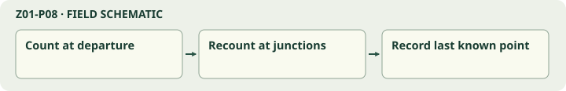

Z01-P08 · Survival fundamentals
Keep track of everyone
Prevent unplanned separation before it becomes a search.
When it applies · Group travel on land in uneven terrain, variable visibility or busy trail networks.
Equipment · Group roster or head count, paper or offline map and an agreed signal.

Actions
- Choose a route and pace that the whole group can manage. Agree that nobody leaves a junction before the group is accounted for.[E11, ED]
- Check attendance at the start, at junctions and before leaving a long stop. Give the back of the group a way to signal the front.[E11, ED]
- If someone is missing, keep the remaining group together. Record the last place and time where the person was seen and contact responders when needed.[E11, T06, ED]
Verify · Everyone knows the next checkpoint and the count agrees at every major stop.[ED]
Stop or change course · Avoid splitting into an uncoordinated search. Follow directions from responders.[T06, ED]
Evidence and editorial notes
- E11 · NPS · Hike Smart
- Plan your hike; Stay together · Groups on hiking routes
Choose a route suited to the group's abilities and hike at a pace that keeps the group together.
Primary source · checked 2026-11-24 - T06 · NPS · Outdoor Emergency Plan
- If you get lost or hurt; call for help · Outdoor US emergency
Communicate location, last known point, situation and needs. Stay put when unable to establish a safe route unless immediate danger requires movement.
Primary source · checked 2026-11-24
Source lineage · NPS Hike Smart and B014 P17.